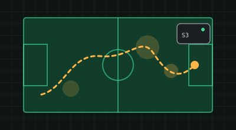

главный проект · магистерская
Трекер для футбола на ESP32-S3
Носимый трекер с GPS и IMU. Прошивка на C++ снимает данные с датчиков и отправляет их на сервер.
Бэкенд на Go сливает GPS и IMU фильтром Калмана и считает спринты, ускорения и зоны интенсивности. Дашборд получает поток по WebSocket.
github.com/Sadovod04/treker →